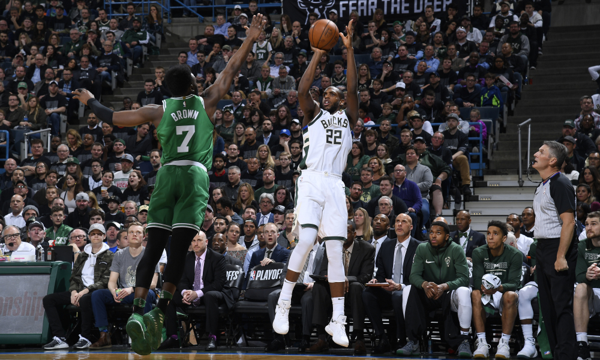

Game 1: Los Angeles Clippers at Philadelphia 76ers
My Pick:
Philadelphia 76ers
Why I'm Rolling with them:
The Clippers bench is putting up an unprecedented amount of points, averaging 57 points a game. They have a very balanced, tenacious roster and it's hard to count them out from any game because of that. They are going to surprise a fair number of teams this year fairly early on, before teams gameplan to stop this balanced roster. Boban got 13 and 9 in a quarter a couple games ago, and if the Clippers can find a way to give him more minutes that could be very helpful. But this 76ers team should be able to feast on the Clipper's lack of rim protection, with Gortat being no match for Embiid. Simmons should be able to bounce back after their game against the Raptors that saw him put up 11 turnovers against Kahwi. He's poised for a bounceback game as the 76ers win 117-109.
Game 2: Denver Nuggets at Cleveland Cavaliers
My Pick:
Denver Nuggets
Why I'm Rolling with them:
Cleveland fired Ty Lue, found out Kevin Love was injured, and still somehow managed to win their first game in a blowout. That won't happen against this Denver team, who is better at every position going down the lineup. Cleveland's vets look rejuvenated, with Rodney Hood getting 26 points on 13 shots. The Nuggets won't let that happen, even with the travel wearing them down. Millsap and Jokic are a dominant frontcourt, with millsap getting a last second tip-in yesterday to pull the Nuggets ahead of the Bulls. Count on them to show up big as the Nuggets win, 125-113.
Given a starting role, Cedi Osman is starting to shineGame 3: Oklahoma City Thunder at Charlotte Hornets
My Pick:
Oklahoma City Thunder
Why I'm Rolling with them:
If the Thunder look like even half the team they were against the Clippers, this game is already a foregone conclusion. The defensive ferosity this team displays at times is shocking, and leads to a ton of transition points for them. The Hornets have really only had one bad loss, and have been competitive in their games so far. However, you can't count on Tony Parker to put up 24 a game to pull you ahead. Westbrook and Adams look great on the pick and roll, and that pairing will be instrumental as the Thunder pull through, 115-107.
Game 4: Sacramento Kings at Atlanta Hawks
My Pick:
Sacramento Kings
Why I'm Rolling with them:
The Kings have looked great to start the season. Only four teams (Warriors, Bucks, Raptors, Nuggets) have more wins than they do, and they've been scoring at a blistering pace. De'Aaron Fox continues to produce at a high level, and the phenom that is Buddy Hield has been putting up very impressive numbers so far. This backcourt is producing at a very high level and I don't think that the Atlanta defense will be able to slow them down. I'm excited to see Fox's defense on Young, I think Young will have a very tough game tonight as the Kings win 122-112.
Game 5: Milwaukee Bucks at Boston Celtics
My Pick:
Milwaukee Bucks
Why I'm Rolling with them:
Giannis is back. The Bucks have a top 6 offensive rating and a top 2 defensive rating. Their new offense is a joy to watch, and even though Antetokounmpo hasn't been playing to the best of his abilities, he's still the best player on the court today. Both teams are fairly rested, but Boston is coming off of a tough game against the Pistons whereas Milwaukee hasn't played since Monday, allowing them plenty of rest and time to gameplan for this Boston team. The Bucks are a team with a lot of length, and that should be enough to make Boston's already dismal offense suffer. This should be a good test of the new Bucks offense against the top defensive team, but Milwaukee takes it 113-104.
 Khris Middleton shooting over Boston's Jaylen BrownGame 6: New Orleans Pelicans at Portland Trail Blazers
My Pick:
Portland Trail Blazers
Why I'm Rolling with them:
A rematch of the 2018 first round, which saw the Blazers get swept by the 6th seed Pelicans. What's changed since then? Firstly, The Blazers have greatly improved their bench, Zach Collins is averaging 11 and 5 and Stauskas and Curry aren't slouches either. Secondly, the Pelicans got rid of Rondo, who seems to shine the brightest on the playoff stage. Third, the Pelicans played yesterday and saw Davis and Holiday play 40+ minutes. I'm counting on this Pelicans team to be tired, and I'm counting on Portland's bench to support its stars. Portland wins, 119-113.